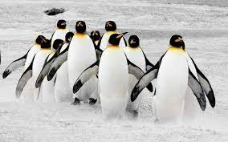
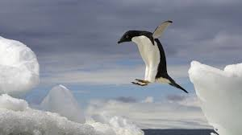
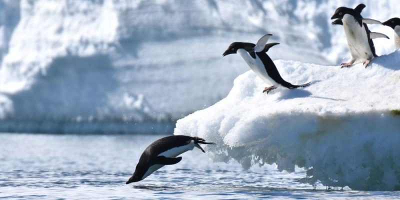
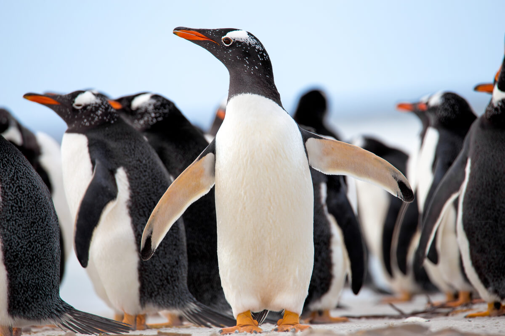
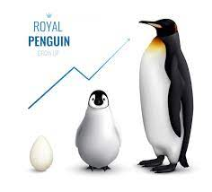

<html>
<head><title>Pinguino</title></html>
<body background="sadffae.jpg">
<font size=6>
<h1>Pinguino<br></h1>
Los pingüinos son aves marinas no voladoras que pertenecen al orden Sphenisciformes y la familia Spheniscidae. 
<br>Son conocidos por su apariencia distintiva, su adaptación al ambiente acuático y su comportamiento social.<br>
<br>
<br><br><br><br>
<hr color=white size=7>

<h2>Características físicas:<br></h2>
Los pingüinos tienen un cuerpo fusiforme y aerodinámico, con alas modificadas en forma de aletas que les permiten nadar ágilmente en el agua.<br>
Su plumaje es denso y está cubierto de plumas cortas y rígidas, lo que les proporciona aislamiento térmico y ayuda a repeler el agua.<br>
La mayoría de las especies de pingüinos tienen una coloración característica, con partes superiores negras y partes inferiores blancas. Esta coloración ayuda en el camuflaje en el agua, ocultándolos de los depredadores marinos.<br>
<br>
<br><br><br>
<hr color=black size=6>

<h2>Distribución y hábitat:<br></h2>
Los pingüinos se encuentran principalmente en el hemisferio sur, desde las regiones más frías de la Antártida hasta las costas de América del Sur, África, Australia y Nueva Zelanda.<br>
Viven en ambientes marinos, preferentemente en áreas con aguas frías y ricas en nutrientes, como las corrientes oceánicas frías.<br>
Algunas especies de pingüinos habitan en islas y regiones costeras, mientras que otras se adentran en el mar abierto durante la temporada de alimentación.<br>
<br>
<br><br><br><br>
<hr color=yellow size=5>

<h2>Comportamiento y adaptaciones<br></h2>
Los pingüinos son aves altamente adaptadas al medio acuático. Son excelentes nadadores y pueden sumergirse a grandes profundidades en busca de alimento.<br>
Son conocidos por su habilidad para "volar" bajo el agua, utilizando sus alas como aletas y moviéndose con gracia y rapidez.<br>
La mayoría de las especies de pingüinos son gregarias y forman grandes colonias para reproducirse y criar a sus crías.<br>
Durante la reproducción, los pingüinos suelen realizar exhibiciones y rituales de apareamiento, como vocalizaciones y movimientos corporales.<br>
<br>
<br><br><br><br>
<hr color=orange size=4>

<h2>Ciclo de vida y reproducción<br></h2>
Los pingüinos son monógamos en su mayoría y se aparean de por vida. Cada especie tiene su propia temporada de reproducción y rituales específicos.<br>
La mayoría de las especies de pingüinos anidan en colonias grandes en tierra, generalmente en lugares rocosos o en playas. Construyen nidos simples o utilizan guijarros para proteger sus huevos.<br>
Ambos padres participan en la incubación de los huevos y en el cuidado de los polluelos. Después de la eclosión, los padres alimentan a los polluelos con comida regurgitada.<br>
<br>
<br><br><br>
<hr color=white>
<center><font color=white>Sosa Fierros Jonnathan Ellian 2IM11</font></center>
</body>
</html>